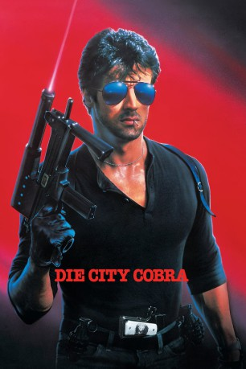

#10962 Die City-Cobra
Alternativ: Cobra (Englischer Titel)
 
 IMDB-Wertung: 5.7 / 10
IMDB-Wertung: 5.7 / 10  Metascore: 25
Metascore: 25 
Marion Cobretti, genannt "Cobra", ist als Bulle in Los Angeles für seine harte Gangart bekannt und wenig geschätzt. Man übergibt ihm den Fall des "Schlitzers", der es vor allem auf Frauen abgesehen hat. Cobra macht eine Zeugin ausfindig, das Model Ingrid, und bereitet sich mit deren Hilfe darauf vor, bei Schlitzers nächstem Angriff zuzuschlagen.
Jahr: 1986
Dauer: 87 Minuten
FSK: 18
Land: USA Studio: Cannon Film DistributorsTonspuren: DTS-HD - ,
Untertitel:
Auflösung: 1080p (1920x1080) Größe: 15155 MB
Genre: Action, Thriller, Krimi
Regisseur: George P. Cosmatos
Drehbuch: Paula Gosling, Sylvester Stallone
Soundtrack: Sylvester Levay
Darsteller:
 Sylvester Stallone als Marion Cobretti
Sylvester Stallone als Marion Cobretti Brigitte Nielsen als Ingrid
Brigitte Nielsen als Ingrid Reni Santoni als Gonzales
Reni Santoni als Gonzales- Andrew Robinson als Detective Monte
 Brian Thompson als Night Slasher
Brian Thompson als Night Slasher- John Herzfeld als Cho
 Lee Garlington als Nancy Stalk
Lee Garlington als Nancy Stalk Art LaFleur als Captain Sears
Art LaFleur als Captain Sears Marco Rodríguez als Supermarket Killer
Marco Rodríguez als Supermarket Killer Val Avery als Chief Halliwell
Val Avery als Chief Halliwell David Rasche als Dan
David Rasche als Dan- Nina Axelrod als Waitress
- Brad Bovee als Innocent Bystander
- Kevin Breslin als Supermarket Kid
 Roger Aaron Brown als Policeman #2
Roger Aaron Brown als Policeman #2 Gregory Cruz als Janitor
Gregory Cruz als Janitor- Karen Kondazian als Nurse
 Paul Dion Monte als Supermarket Clerk
Paul Dion Monte als Supermarket Clerk- Jim Wilkey als Apartment Killer #2
- Clare Torao als Reporter #2
- Joe Fowler als Reporter #6
- Brian Edwards als Hospital Visitor #1 (uncredited)
 Ron Jeremy als Extra (uncredited)
Ron Jeremy als Extra (uncredited)- Ross St. Phillip als Security Guard
- John Hauk als Low Rider
- Nick Angotti als Prodski
- Joe Bonny als Policeman #1
- John Cahill als Father of Blonde Girl
- Malik Carter als Night Guard
- Louise Caire Clark als Woman in Car
- Christine Craft als TV News Reporter
- Deborah Dalton als Nurse #2
- Harry Demopoulos als Dr. Demopoulos
- Scott Dockstader als Killer #2
- Laura Drake als Murdered Waitress
- Ken Hill als Garage Bystander
- Arthur Kassell als Internal Affairs Man #2
- Fred Lucky als Sketch Artist
- Robert Martini als Apartment Killer #1
- Joe Masino Jr. als Killer #3
- Dorothy Meyer als Nurse #1
- Joe Stone als Killer #1
- Bert Williams als Commissioner Reddesdale
- Leslie Morris als Reporter #1
- Steve Lentz als Reporter #3
- Glenda Wina als Reporter #4
- Michael Bershad als Reporter #5
- Julie Hampton als Policewoman (uncredited)
- Kurt V. Hulett als Suspect in Custody (uncredited)
- Helen Kelly als News Reporter #8 (uncredited)
Datei: X:\FSK18-1900-1999\City-Cobra, Die (1986, FSK18, 1920x1080).mkv seit 14.04.2019
Festplatte: FSK18
 Es gibt insgesamt 108 Filme in der Gruppe 'FSK18-1900-1999'
Es gibt insgesamt 108 Filme in der Gruppe 'FSK18-1900-1999'